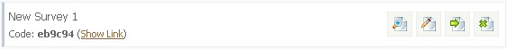
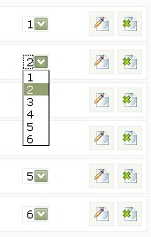
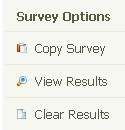

Creating Surveys
Creating surveys is a very easy process. This page details a few of the options and features of the survey system. Please read carefully. Thank you!
Creating Your First Survey
Firstly, click on 'Surveys' in the admin area and select the link in right hand menu 'Create New Survey'. You`ll be presented with a list of form options. Lets
go through them briefly:
Title of Survey - Title of your survey.
Survey Display Type - Single page surveys show the whole survey on a single page. Multiple shows a single question per page.
Enable Single Page Captcha - Single page surveys may require some form of spam prevention. Enable the captcha for this.
Display Survey Title - Determines if you want to display your survey title to the public.
Select Colour Scheme - Select colour scheme applicable for this survey.
Request Participants E-Mail Address - If you have some special offers you think may interest your visitor, you can request they leave their e-mail address.
Can Participants View Survey Results - Do you want visitors to be able to view the survey results?
Expiry Date for Survey - Lets you set an expiry date for the survey.
After Survey Completion - Show message to visitors after survey completion or direct to specific page. Useful for special offers.
Can Participants Complete Survey Multiple Times - Can visitors complete the survey more than once? Sets a cookie on the visitor machine.
Notification E-Mail For Completed Survey - Enables you to be notified if a survey is completed. Can be sent to multiple addresses.
Enable Keyword Logging - Enable keyword logging if you are curious about the keywords your visitors used for a certain survey.
Activate Survey - Enable/disable survey. Must be enabled for visitors to use.
Complete the options above and then click 'Create New Survey' to create survey.
Once completed, click 'Surveys' from the menu to view created surveys.
Questions
Once you have added a new survey, you need to add some questions to that survey. You can add as many questions as you like, unless you are
limited to the free version. Note that you cannot view a survey until you have added some questions.
To add questions, select 'Surveys' from the admin menu. You`ll be presented with a screen similar to the following:

Click the 'Show Link' button to view the url for your survey. The four buttons to the right of each survey are as follows:
Preview Survey
Edit Survey
Survey Options
Delete Survey
Preview, edit & delete should be self explanatory. For your questions, click the survey options link. You will see a list of options in the right hand menu.
Click 'Add/Remove Questions' and then on the next page, select 'Add New Question'.
The questions page should be fairly straightforward. Include some help text if you want to help visitors understand a question, and select the question type
that would require. Use the 'Examples' link provided on the page for more help and to see form examples. Multiple options are only applicable for certain
form types. When you are happy with your entries, click 'Add New Question'.
Ordering/Editing & Deleting Questions
To edit or delete a question, refer to the previous paragraph and select 'Add/Remove Questions'. You can also choose which order you want to
display the questions by using the drop down menus on the same page. After each select the page will refresh with the new order. See the following diagram:

Copying Survey/Viewing & Clearing Results
Going back to the previously mentioned options screen, in the right hand menu you`ll see the following:

A really useful feature of Maian Survey is the ability to copy a survey. You might have 2 surveys very similar and want to copy the data. Use the copy option
for this. Note that no 2 surveys can have the same title. The clear option will clear all results from a survey and you can click 'View Results' to view the current
results. Note that the results page is always viewable to admin, even if public view is switched off.
Exporting Contacts
The options screen also has the ability to 'Export Contacts. This lets you export your names & e-mail addresses that have been left by visitors into a .CSV file. This can be useful if you want to import the data into another program. Note that some visitors may not have left their correct and valid details and you should always be aware of this. Requesting users details doesn`t go down well with some people.
Keyword Analysis
And finally on the options screen is ability to view a 'Keyword Analysis'. This will only be applicable if you enabled keyword logging for a survey. The keyword option lets you see a list of keywords used for a survey. You can filter the keywords by question or date or both and you can print all keywords. You can also click a keyword to view all answers associated with that keyword. The keyword analysis page also shows the frequency of each keyword and the percentage. Use the 'Clear Keywords' option to remove keywords.
Viewing Survey
Remember, you can only view a survey after you have added some questions. The web link for any survey will be:
http://www.yoursite.com/survey/index.php?survey=xxxxxx
where xxxxxx is the unique 6-digit code generated by the system. Click "Show Link" option in the admin area if you aren`t sure.
Help/Support
As this software is a little out of date and so that I can focus on new software, Maian Survey is no longer supported. Sorry.